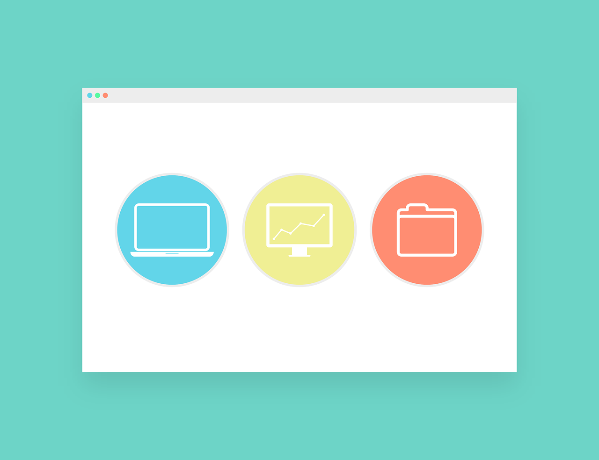

Desenvolvimento Frontend
O desenvolvimento frontend pode ser resumido como o desenvolvimento de interfaces. Essa áre une tanto a área de programação quando a área de design. Por conta disso, o profissional desenvolvedor(a) frontend precisa ter bons conhecimentos tanto de programação quanto de UI/UX.
A ideia principal do frontend é se concentrar na programação do lado visual, dando vida à ideias e designs desenvolvidos pela área de design. Por conta disso, o(a) profissional precisa de uma boa sensibilidade quanto ao relacionamento de cores, espaçamentos, tipografia e etc.
Além disso, outra parte fundamental do desenvolvimento frontend é fazer com que aplicações se adaptem bem à vários tamanhos de telas diferentes, o que é conhecido como responsividade.
Por fim, outro ponto essencial é a parte de UX, ou experiência do usuário, que consiste no objetivo de entregar uma alta qualidade de resposta, velocidade e precisão quanto a iteração do usuário.
Principais tecnologias
Existem várias tecnologias relacionadas ao desenvolvimento de interfaces. Tanto relacionadas ao desenvolvimento web, desenevolvimento mobile ou desenvolvmento de apps para desktop. As principais são:
- HTML
- CSS
- Javascript
- React.js
- Next.js
- Flutter
- React Native
- Electron.js
- E várias outras
Algumas dessas tecnologias são frameworks que servem para agilizar o trabalho de desenvolvedores, como é caso de Next.js. Como pode ser notado, a jornada de um desenvolvedor frontend é longa como qualquer outra jornada de desenvolvimento.
Contudo, o prazer de construir interfaces, e entregar sistemas bonitos e funcionais vale a pena.